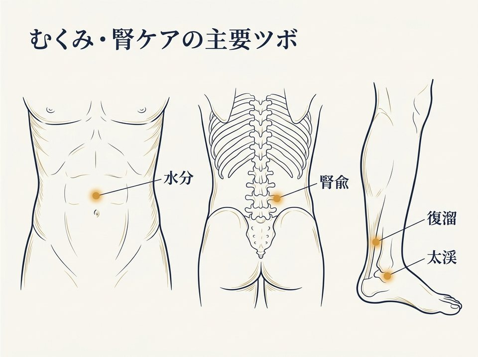

尿閉の鍼灸
急性尿閉は導尿などの緊急処置が必須です。主治医管理下の慢性期・再発予防に、優しいツボ施術と養生で寄り添います。


院長YouTube解説・関連動画
尿閉の原因は複数が組み合わさって起こることも多い
尿閉には、急性と慢性の場合があります。尿閉の原因は、膀胱の収縮性の障害、下部尿路閉塞や膀胱の収縮と括約の筋弛緩の調整が失われることなどです。原因は1つではなく、複数の原因が組み合わさって起こることも多いです。
主な原因は前立腺肥大症です。前立腺は尿をためる膀胱の下に位置する臓器のことです。この前立腺という臓器が腫れてくるのが前立腺肥大症という病気です。
前立腺肥大症が進んでしまうと、尿の通り道の尿道が圧迫されて狭くなります。狭くなることによって尿が出にくくなったりするのです。
放っておくと、お酒をたくさん飲んだ時などに前立腺が充血して腫れ、膀胱の出口が閉まってしまいます。すると、尿閉が起こります。
前立腺が充血し腫れる原因は、お酒だけでなく、長い時間座っていることや咳止めや不整脈の薬や感冒薬、精神安定剤などもあります。
尿閉は女性にも男性にも起こりますが、中でも男性に多いです。男性の場合、前立腺異常や尿道が狭くなることによって下部尿路閉塞が起きます。
尿閉は、男性と女性のどちらもに共通する原因は、薬や重い宿便、糖尿病や多発性硬化症、パーキンソン病や昔に骨盤内手術をしたことによる膀胱除神経がある人の神経性膀胱などです。
前立腺の問題:前立腺肥大や前立腺癌など、前立腺の異常が尿道を圧迫し、尿の流れを妨げることが多いです。これは主に男性に見られる原因です。
尿道狭窄:感染症、外傷、手術の合併症などにより尿道が狭窄し、尿流が阻害されることがあります。
膀胱の機能不全:膀胱筋の弱さや神経障害によって、膀胱が十分に収縮しないことがあります。これにより、尿が膀胱内に滞留することがあります。
神経系の障害:脊髄損傷、多発性硬化症、パーキンソン病、糖尿病性神経障害など、神経系の障害が尿閉を引き起こすことがあります。
薬剤の副作用:抗コリン薬、抗精神病薬、抗ヒスタミン薬など、特定の薬剤が尿閉の原因となることがあります。
尿道結石:尿道内に結石が形成され、尿道を塞いでしまうことがあります。
外傷:骨盤や尿道の外傷が尿閉を引き起こすことがあります。
手術後の合併症:特に骨盤や下腹部の手術後に、一時的な尿閉が発生することがあります。
尿閉の症状では排尿が全くできなくなることもある
尿閉では、排尿が全くできなくなることがあります。全く尿ができない場合、膀胱の中に尿がいっぱいになります。
すると、膀胱が広がり数時間に渡るほど長い時間の非常に激しい痛みがあり、下腹部がパンパンになります。尿閉を起こした多くの人は、ある程度の量は排尿できても完全に膀胱を空っぽにすることができなくなります。
完全に膀胱を空にできない場合、膀胱は少しずつ広がっていきます。この時、痛みはありません。しかし、排尿を始める時が難しかったり、尿の勢いが低下したり、残尿感があったりするということが起こります。
膀胱を空にできないため、比較的いつもいっぱいに近い状態になります。すると、尿漏れや夜間の排尿や頻尿が起こることもあります。
膀胱の中に残っている尿は細菌が増殖するために非常に条件の良い場所となる場合もあります。細菌が増殖してしまうと、尿路感染症を起こしてしまう可能性があります。
尿閉を起こしたときの具体的な症状は、尿をしたいのに出ない、尿の勢いが弱い、尿をしている間に何度も途切れてしまい１度で終わらない、尿が出るまでに時間がかかる、お腹に力を入れなければ尿がでない、尿をした後もまだ残っている感じがする、などです。
尿閉では、急にこのような症状を強く感じたり、このような症状が続きます。
尿意があるにもかかわらず尿が出ない:尿を排泄しようとしてもできない、または非常に少量しか排尿できない状態。
下腹部の痛みや圧迫感:膀胱が尿で満たされているため、下腹部に痛みや圧迫感を感じることがあります。
膀胱の膨満感:膀胱に尿が溜まっていることを感じることができる場合があります。
頻繁な尿意:尿を排泄しようと何度も試みるが、尿が出ないか、ごく少量しか出ない状態。
尿漏れ:膀胱が過剰に満たされると、尿が少量漏れ出ることがあります。
強い尿意にも関わらず排尿できない:尿意を感じるにも関わらず、尿が排出されない。
痛みや不快感:尿道や骨盤領域に痛みや不快感を感じることがあります。
全体的な不調:長期間の尿閉は、倦怠感や全身の不調を引き起こすことがあります。
尿閉と思われる症状があった場合、医薬品を使っている場合は、放っておいてはいけません。医師や薬剤師に連絡し、早めに相談してください。
尿閉の改善には、尿道からカテーテルを膀胱の中に入れ、膀胱の中にある尿を導尿する必要があります。尿閉は具体的にはっきりとした症状がなく進んでいることもあります。
早く見つけ、対応するために尿閉の原因となる可能性のある薬を使う場合は、医師から尿閉と排尿困難の副作用と注意などの説明をきちんと聞いておくことが重要です。
尿閉の原因を改善することが重要です。尿閉を引き起こす薬を使用している時は、できるのであれば薬の使用をやめてください。
男性で前立腺が肥大している場合は、前立腺手術や前立腺を縮小させるフィナステリドやデュタステリドなどの薬、膀胱頸部の筋肉を緩めるテラゾシンやタムスロシンなどの薬が必要になることもあります。
問題が神経にあり、膀胱の収縮や機能に障害のあるときは、定期的にカテーテルを入れたり、カテーテルをしばらく入れたままにしておくということが必要になる可能性もあります。
尿を体の外に出すための道を作るために手術をすることもあります。
カテーテル挿入:尿を膀胱から直接排出するために、カテーテルを尿道または腹部を通じて膀胱に挿入します。緊急の尿閉の場合、これが最も迅速な解決策です。
薬:前立腺肥大が原因の場合、アルファ遮断薬や5アルファ還元酵素阻害薬が処方されることがあります。神経因性膀胱に対しては、抗コリン薬やボツリヌス毒素の注射が適用されることもあります。
手術:前立腺肥大に対しては、経尿道的前立腺切除術などの手術が行われることがあります。尿道狭窄に対しては尿道拡張術や尿道形成術が選択されることがあります。尿道結石が原因の場合、結石を除去する手術が必要になることがあります。
生活習慣の変更と自己管理:例えば、定期的に排尿する、十分な水分を摂取する、便秘を避けるなどの措置が有効です。
物理的な方法:骨盤底筋トレーニングやバイオフィードバックが、特定のタイプの尿閉に有効な場合があります。
アルファ遮断薬:前立腺肥大や前立腺の問題が原因の尿閉に対して有効です。
タムスロシン、アルフズシン、ドキサゾシン、テラゾシンなどがあります。これらの薬は、前立腺や膀胱の筋肉をリラックスさせ、尿の流れを改善します。
5-アルファ還元酵素阻害薬:これも前立腺肥大による尿閉に用いられます。
フィナステリドやデュタステリドがあります。これらの薬は前立腺のサイズを減少させ、尿の流れを改善するのに役立ちます。
筋弛緩剤:骨盤底の筋肉の緊張やけいれんが原因の尿閉に対して使用されることがあります。
バクロフェンやジアゼパムなどがあります。
パラシンパシー抑制剤:神経因性膀胱など特定の状態に用いられることがあります。
オキシブトニン、トルテロジンなどがあります。
尿閉の主な原因の1つである前立腺肥大症は、自覚症状がない状態で進行していることがあります。突然、尿閉を起こすことも珍しいことではないのです。
夜間に地面に座ることによる冷えやビールなどのアルコールをを多量に飲むことで、気が付かない間に進んでいた前立腺肥大症が急に悪化し、尿閉を起こしてしまうこともあります。
尿閉は一時的に改善できたとしても油断せず、日常生活も気をつけ、きちんと改善に取り組むようにしましょう。
尿閉は生活に支障もある、非常につらい症状が起きます。
予防するためにも、尿の出る勢いが弱かったり、排尿に時間がかかったり、夜中に何度もトイレに起きたり、というような症状がある場合は、泌尿器科の医師に早めに相談することが重要です。
ツボの位置と押し方
中極は、体の中心線上にあるツボです。子宮の入り口の上にあります。
押すときは親指の腹で押します。ゆっくりと弱い力で押すことがポイントです。
腰陽関は、第4腰椎と第5腰椎の棘突起の間にあります。 背骨と背骨の間のへこみにあるツボなのです。
押すときは、親指や人差し指と中指で押します。力加減は心地良いと感じる程度がおすすめです。
画像の説明を入力してください
横骨は、恥骨のすぐ上にあるツボです。恥骨の中心から左右に指幅0.5本分いったところにあります。
押すときはあまり強く刺激しないことが大事です。いきなり押し込まず、揉み込むようなイメージで押しましょう。
▼ 詳しく知りたい項目だけタップして開けます（全項目の医学解説を収録）
01. 原因とメカニズム
なぜ症状が起きるのか・鍼灸の作用機序を読む
▼
01. 原因とメカニズム
なぜ症状が起きるのか・鍼灸の作用機序を読む
膀胱に尿が溜まっているにもかかわらず排尿できない状態で、急激に起こる急性尿閉と徐々に進む慢性尿閉があります。最多の原因は男性の前立腺肥大症で、飲酒・長時間座位・冷え・風邪薬や抗コリン薬・抗ヒスタミン薬の服用が誘因となります。尿道狭窄や結石、糖尿病や脊髄損傷・骨盤手術後の神経因性膀胱、重度の便秘も原因です。急性尿閉はカテーテル導尿などの緊急処置が必須となります。
なぜ鍼灸で改善へ向かうのか？（作用機序の図解）
尿閉に対する鍼灸は、仙髄排尿反射（陰部神経）と骨盤底の協調調整機序を通じて、お体本来の回復力を引き出します。
膀胱・尿道括約筋を支配する仙髄神経（S2〜S4）領域の経穴へ的確にアプローチします。
弱まった骨盤底筋の収縮サポートと、過敏になった膀胱排尿筋の鎮静をバランスよく促します。
腰殿部と下腹部の血流を高め、冷えや過緊張による頻尿・違和感・痛みを和らげます。
泌尿器科の評価やセルフエクササイズと併用し、安心して外出できる日常の回復を支えます。
02. よくあるお悩み
このような症状はありませんか？（4項目）
▼
02. よくあるお悩み
このような症状はありませんか？（4項目）
- ✓強い尿意があるのに尿が出ない・下腹部が痛い
- ✓尿の勢いが弱く途中で途切れてしまう
- ✓排尿後もお腹に尿が残る感じ（残尿感）がある
- ✓飲酒や冷え、風邪薬の服用で出にくくなる
03. 当院の施術アプローチ
施術の進め方・改善のポイントを見る
▼
03. 当院の施術アプローチ
施術の進め方・改善のポイントを見る
04. ツボ詳細・セルフケア一覧
腎・泌尿器・排尿トラブル・透析サポートのツボ図解（6穴）
▼
04. ツボ詳細・セルフケア一覧
腎・泌尿器・排尿トラブル・透析サポートのツボ図解（6穴）
実際の施術ではお一人おひとりの体質・症状に合わせて選穴しますが、過活動膀胱・尿失禁・前立腺症状・CKD/透析QOLの標準治療併用ケアの臨床でよく用いられる代表的なツボの目安です。
| ツボ名 | 位置の目安 | 主な狙い | セルフケアの注意点 |
|---|---|---|---|
| 腎兪（じんゆ） | 腰のくびれの高さ、背骨から指2本分外側 | 腎・泌尿器周囲の自律神経と冷え・倦怠感ケア | 腰部を温めることで夜間頻尿の負担も和らぎます。 |
| 次髎（じりょう） | 仙骨の2番目のくぼみ（お尻の上中央付近） | 仙髄排尿神経（S2〜S4）を介した膀胱機能調整の最重要穴 | 腹圧性・切迫性尿失禁や過活動膀胱の国際RCTでも定番です。 |
| 関元（かんげん） | おへそから指4本分下 | 下腹部の冷え改善・骨盤内の循環サポート | 排尿を済ませた状態で優しく温めます。 |
| 中極（ちゅうきょく） | 恥骨のすぐ上、おへそから指5本分下 | 膀胱の過敏性・残尿感・頻尿の調整 | 強く押し込まず軽く手を当てる・温める程度にします。 |
| 三陰交（さんいんこう） | 内くるぶしの上から指4本分上 | 脛骨神経を介した膀胱過活動の鎮静・睡眠の質改善 | 透析中の方はシャント腕を避け非透析日に安全に行います。 |
| 太渓（たいけい） | 内くるぶしとアキレス腱の間 | 腎経の原穴として冷え・むくみ・夜間頻尿の土台づくり | 足首を冷やさない工夫と合わせてケアします。 |
05. 医学的根拠・国際査読論文（PubMed / Cochrane）
科学的エビデンス・出典リンク一覧（4件）
▼
05. 医学的根拠・国際査読論文（PubMed / Cochrane）
科学的エビデンス・出典リンク一覧（4件）
国際的な医学データベース（PubMed・Cochrane等）で報告されている過活動膀胱・尿失禁・前立腺症状・CKD/透析QOLの標準治療併用ケア領域の代表的な査読済み鍼灸研究をまとめています（標準治療との併用や研究上の限界を含めて正確に掲載）。
| 年・研究デザイン | 対象・規模 | 主な結果 | 限界・出典 |
|---|---|---|---|
| 2017年 大規模多施設RCT | 腹圧性尿失禁女性 504名（12病院・腰仙部電鍼） | 6週時の1時間パッド尿漏れ量は電鍼-9.9g vs シャム-2.6g（差7.4g, P<0.001）、30週まで失禁減少持続。 | 30週以降の長期持続は今後の検証課題。 JAMA (PMID: 28655016) |
| 2021年 大規模多施設RCT | 慢性前立腺炎/CPPS男性 440名（10病院） | 8週時のレスポンダー率60.6% vs シャム36.8%（OR 2.6, P<0.001）、32週時点でも61.5% vs 38.3%持続。 | 細菌性前立腺炎・悪性疾患の除外が前提。 Ann Intern Med (PMID: 34399062) |
| 2022年 Cochraneレビュー | 過活動膀胱 15研究（n=1,395） | 薬物比較で症状改善率RR 1.25・軽度有害事象減少（RR 0.34）・夜間頻尿減少。重篤な有害事象なし。 | シャム比較では不確実、GRADE低〜非常に低。 Cochrane (PMID: 36148895) |
| 2023年 メタ解析 | 過活動膀胱 30研究統合 | シャム比較でOABSS有意改善（MD -1.13, P=0.01）、薬物併用でOABSS MD -2.28（P<0.00001）。 | 異質性が高く（I²=67〜94%）、GRADE低〜非常に低。 Front Neurol (PMID: 36712423) |
参考文献・出典
- 2017年 大規模多施設RCT（腹圧性尿失禁女性 504名（12病院・腰仙部電鍼））— JAMA (PMID: 28655016)
- 2021年 大規模多施設RCT（慢性前立腺炎/CPPS男性 440名（10病院））— Ann Intern Med (PMID: 34399062)
- 2022年 Cochraneレビュー（過活動膀胱 15研究（n=1,395））— Cochrane (PMID: 36148895)
- 2023年 メタ解析（過活動膀胱 30研究統合）— Front Neurol (PMID: 36712423)
06. よくある質問（FAQ）
よくあるご質問を見る（2件）
▼
06. よくある質問（FAQ）
よくあるご質問を見る（2件）
Q. 今まさに尿が出なくて下腹部がパンパンに痛いのですが、鍼灸に行ってもいいですか？
いいえ、それは急性尿閉の可能性が高く、カテーテルによる導尿などの緊急処置が必要です。腎障害や感染を防ぐため、直ちに泌尿器科または救急外来を受診してください。
Q. 前立腺肥大症や神経因性膀胱で通院中ですが、鍼灸を併用できますか？
症状が安定しており主治医の許可がある場合、薬物療法や自己導尿などの標準治療を妨げない範囲で、下半身の冷えや骨盤周囲の緊張を和らげる補完的ケアとしてご利用いただけます。
あわせて読まれる関連疾患（泌尿器のお悩み）
排尿障害が背景にある尿漏れのため泌尿器科の原因治療が最優先です。主治医管理下で中極・次髎・水泉の補完ケアを行います。
加齢やホルモン変化で前立腺が肥大し排尿障害を起こす良性疾患です。泌尿器科管理と併用し、骨盤内の血流と排尿リズムを整えます。
30〜40代男性に多く、会陰部や下腹部の不快感・排尿症状が続く疾患です。泌尿器科治療と併せて骨盤内の循環と緊張を整えます。
細菌・性感染症による尿道炎は抗菌薬治療が最優先です。治療後の違和感や下半身の冷え・自律神経ケアを補完的に支えます。
精巣の発生・分化過程の障害による機能異常です。泌尿器科での精査・腫瘍化評価やホルモン療法を最優先に、安定期の体調面を補完します。
性欲・興奮・射精や性交痛など男女に起こる性の悩みです。医療機関の相談と併せて骨盤内の巡りと心身の緊張を優しく整えます。
CLINICAL RECOVERY CASES
✨ 実際の臨床改善事例・回復経過を見る
銀座本院をはじめ各院での実際の改善事例を症状別に絞り込んでご確認いただけます。
おひとりで悩まず、まずはご相談ください
銀座本院・川口・大宮・横浜・博多・田無の各院でご予約を承っております。